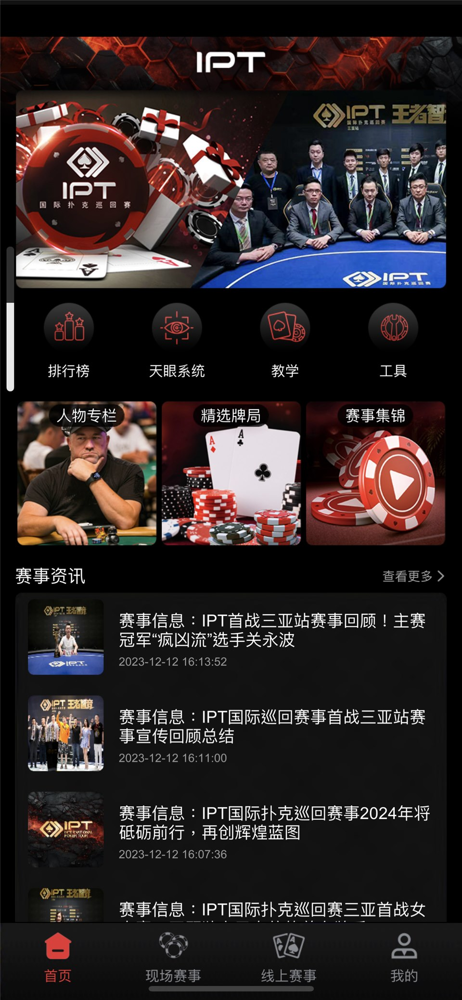
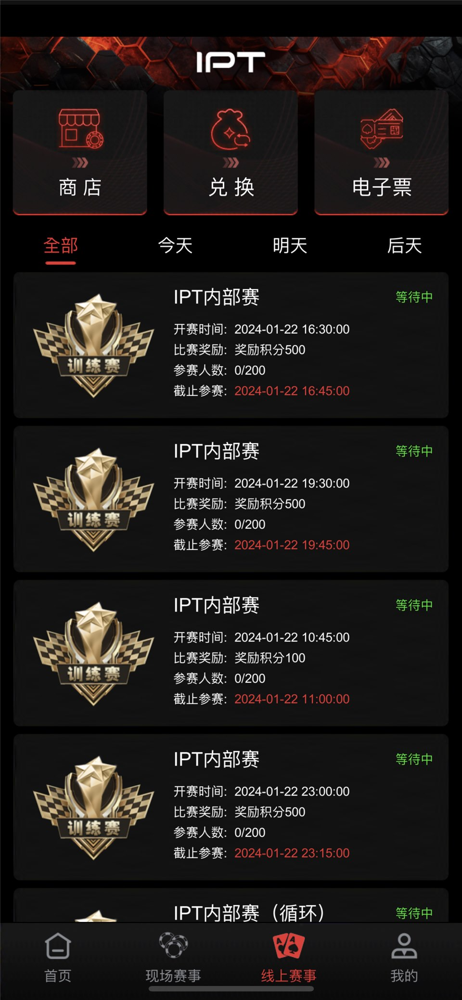
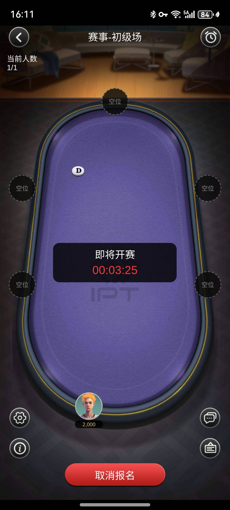
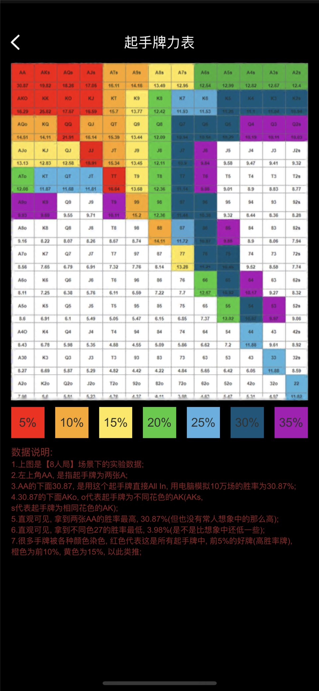

GM 与游戏服务
GMServer、GMServant、gameserver 和 gameroot 等服务组件。

Public Scope
可见 C++ 服务、Tars 接口、房间与玩家流程、数据操作组件、编译协议资源和玩法资料；但缺少完整依赖、数据库迁移、原始 Protobuf 定义、自动化测试和已验证的一键部署。
Repository Components
GMServer、GMServant、gameserver 和 gameroot 等服务组件。
core 目录中的入桌、离桌、掉线、信息与开局处理。
DBOperator 提供数据访问组件，数据库结构和事务仍需验证。
GM、游戏、房间、机器人等服务接口，需要版本策略。
多个 proto.bytes 文件存在，但不能代替可读原始 proto 定义。
快速游戏、SNG 与 Private 资料用于理解产品和服务流程。
Service Flow
实际生产部署还需要网关、鉴权、持久化、可观测性、备份、测试和合规控制。
连接、鉴权与限流。
服务调用与消息契约。
房间与玩家流程。
开局、掉线和事件处理。
数据库与 XGame 服务。
Product Context


